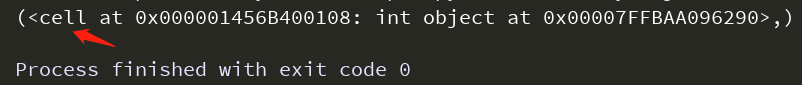
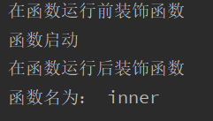
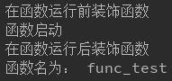
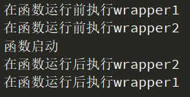

Python装饰器原理与使用
闭包
闭包的定义：嵌套函数，且内部函数调用了外部函数的变量时，就构成了闭包。
下面的例子就是一个函数闭包：
def outer(n):
a = n
def inner():
print(a)
print(inner.__closure__)
outer()
闭包的__closure__显示为cell

装饰器
装饰器其实就是闭包的一种应用。装饰器的作用是不改变函数的调用方式，但要在原来的函数前后添加功能。
装饰器的形式：
def wrapper_name(func): # wrapper_name是装饰器函数名字
def inner():
# 要在被装饰的函数之前添加的功能。eg:
print('在函数运行前装饰函数')
func()
# 要在被装饰的函数之后添加的功能。eg:
print('在函数运行后装饰函数')
return inner
def func_test():
print('函数启动')
final_func = wrapper_name(func_test)
final_func()
print('函数名为：', final_func.__name__)
上面的例子就是一个最简单的装饰器的形式。原函数func_test作为装饰器函数wrapper_name的参数传递到wrapper_name内部定义的inner函数中，即内部函数inner调用了外部函数wrapper_name的参数（这个参数是一个函数对象），并将inner函数自己返回给外部函数wrapper_name，此时便形成了装饰器。
装饰器的要点：
- 被装饰函数作为参数传递给装饰器函数
wrapper_name； - 装饰器函数
wrapper_name内部需要定义一个内部函数inner，并将被装饰函数作为参数传入inner； - 装饰器函数
wrapper_name；需要将内部函数inner作为返回值返回；
最终装饰器函数wrapper_name执行以后返回值也是一个函数对象，再执行返回的对象便达到了“不改变被装饰函数的原本逻辑，但在原来的函数前后添加功能”的目的。
# 下面的调用装饰器函数的方式太繁琐，Python提供了一个语法糖@
final_func = wrapper_name(func_test)
final_func()
#### 即变成下面的方式：####
@wrapper_name # 一定要在被装饰函数定义前调用装饰器
def func_test():
print('函数启动')
# 直接调用被装饰函数
func_test()
#### ####
上面的例子的执行结果：

可以发现原函数func_test被装饰以后func.__name__值变成了inner，如果想要被装饰以后函数的.__name__仍为func_test则需要通过下面的方式：
from functools import wraps # 与下面第4行@wraps(func)结合使用
def wrapper_name(func): # wrapper_name是装饰器函数名字
@wraps(func) # 固定形式
def inner(*args, **kwargs):
# 要在被装饰的函数之前添加的功能。eg:
print('在函数运行前装饰函数')
ret = func(*args, **kwargs)
# 要在被装饰的函数之后添加的功能。eg:
print('在函数运行后装饰函数')
return ret
return inner
@wrapper_name # 一定要在被装饰函数定义前调用装饰器
def func_test():
print('函数启动')
func_test()
print('函数名为：', func_test.__name__)
运行结果：

上面的代码就是装饰器的一般形式。
多个装饰器装饰同一个函数时，先执行距离被装饰函数最近的装饰器（即写在最下面的装饰器），装饰后的结果再作为被装饰函数继续被上面的装饰器进行装饰。
@wrapper1 #一定要在被装饰函数定义前调用装饰器
@wrapper2
def funcTest():
print('函数启动')
funcTest()
